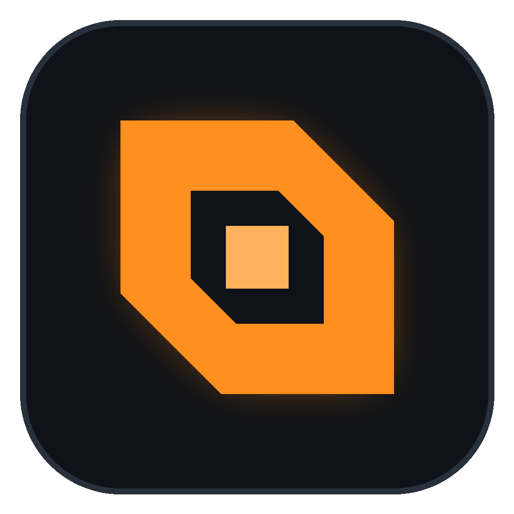

REFORGER
HUB
Projects
Dependency graph
Logs
Updates
⚡ Quick open
Ctrl K
Workbench
+ New project
↻
⚙
All projects
Grid
List
No projects match these filters.
Dependency graph
Your projects and everything they depend on. Drag to pan, scroll to zoom, click a node.
Include all workshop mods
Fit
Mod updates
Only mods with updates
Check now
Update all
Workbench log
Hide known vanilla noise
Refresh
Open folder
Enter
open in Workbench
Shift
+
Enter
show in Hub
Esc
close